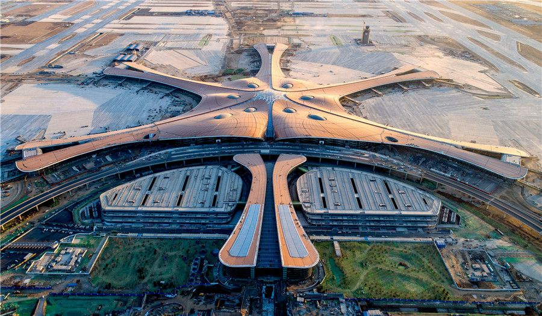
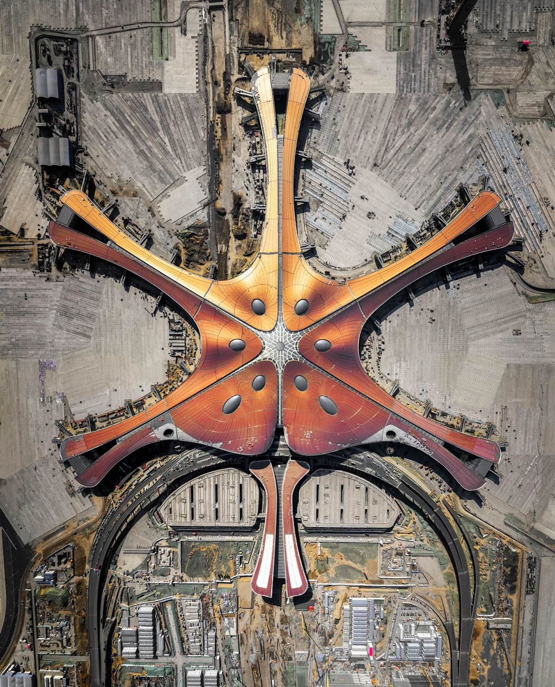
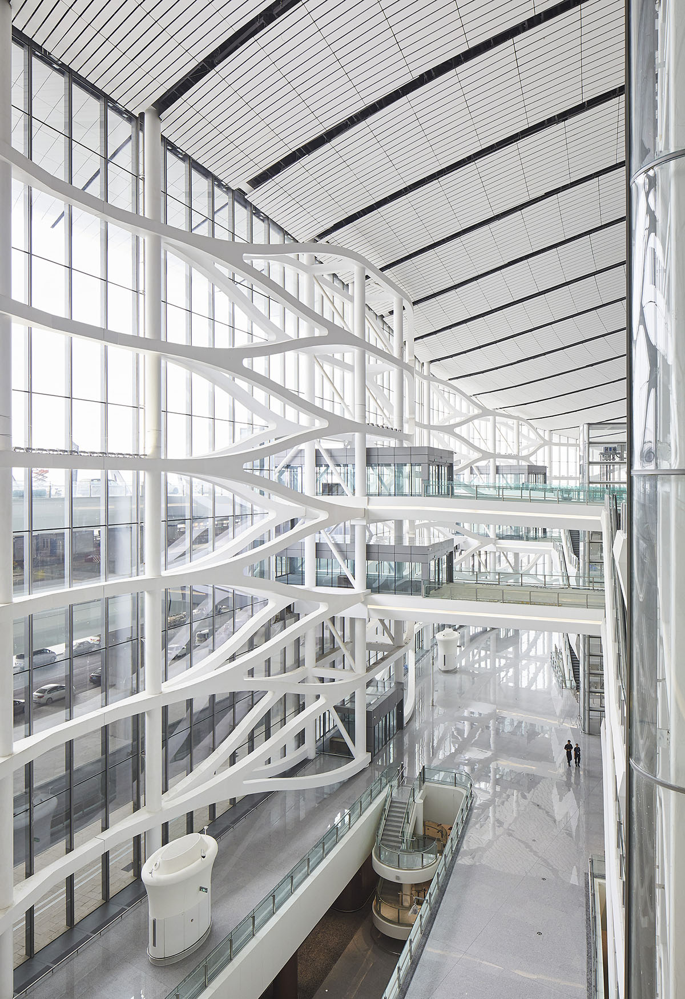

Zaha Hadid Architects' Beijing Daxing International Airport has
officially been opened to the public after four years of construction in Beijing, China.

The project was developed to alleviate congestion at the capital’s existing airport.

ZHA takes inspiration from the principles of traditional
Chinese architecture that organise interconnected spaces around a central courtyard,
the terminal’s design guides all passengers seamlessly through the relevant departure,
arrival or transfer zones towards the grand courtyard at its centre – a multi-layered
meeting space at the heart of the terminal.
